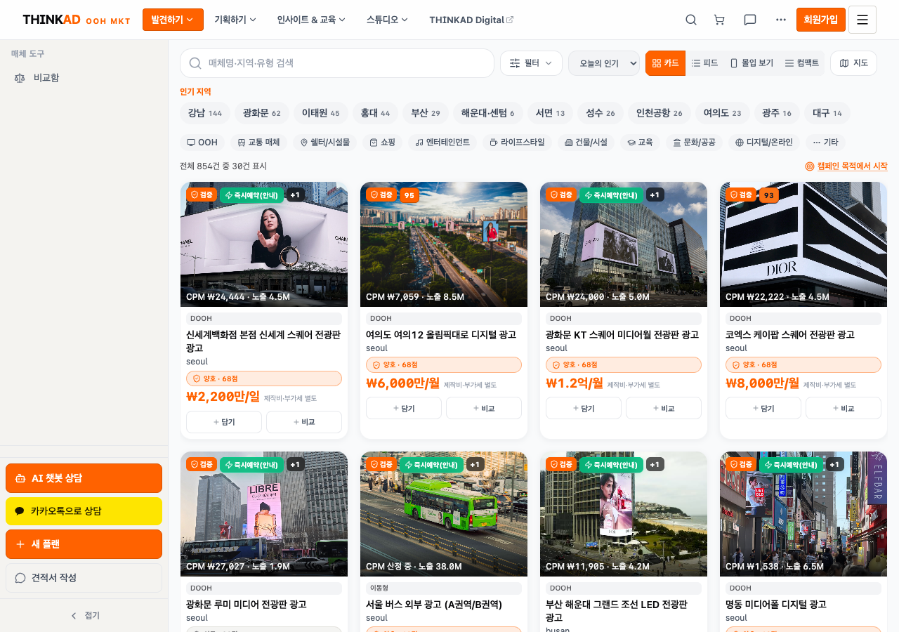
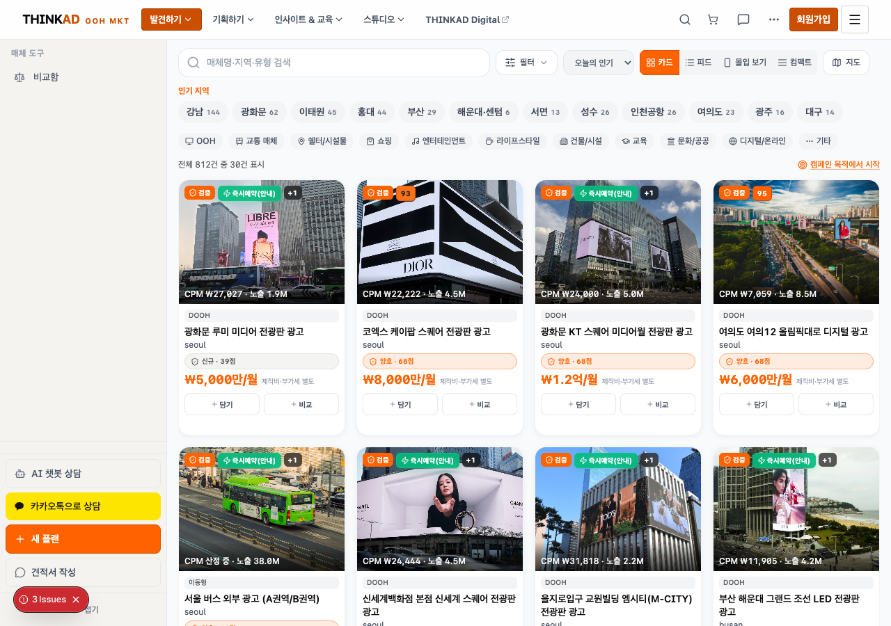

홈 Hero — GNB Set 1 vs Set 3 (1280×900 desktop)
매체 목록 — GNB + 사이드바 (필터 정리 #486 반영)


로컬에서 열기 (추가 URL 접속 불필요):
토큰: Set 1 GNB
Preview URL (보조, 선택): design/orange-accent-b-c-step2 — Set 3는
open reports/design-tone-audit-20260826/screenshots/step2-before-after.html
PNG 파일 6장이 이 HTML과 같은 폴더에 있어야 합니다.
repo 루트에서 위 명령을 실행하거나, Finder에서 screenshots/ 폴더의 HTML을 더블클릭하세요.토큰: Set 1 GNB
#E85A00 · Set 3 GNB color-mix(hermes 80%, black) ·
Hero CTA는 --qp-accent-strong #FF6200 유지 · GNB만 .tkad-nav-chrome scoped.Preview URL (보조, 선택): design/orange-accent-b-c-step2 — Set 3는
?gnbSet=3 추가. (rebase 후 push 필요 시 최신 Preview 재빌드)